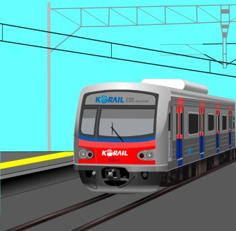

요즘 가장 즐겨듣는 노래는 코드 쿤스트의 Terminal입니다.

그 밖에도


저는 수원에서 통학을 하고 있습니다.
보통 1호선을 타고 통학을 하고 있는데, 1호선을 타고 천안역까지 온 후에
천안역에서 셔틀을 타고 캠퍼스까지 옵니다.
그런데 아산에서 천안캠으로 가는 셔틀 버스가 너무 안 와서 40분 기다려도 안와서 택시 타고 온적이 있습니다. ㅠㅠ
보통 2시간 정도 소요됩니다.
저의 취미는 주로 음악 감상이며, 장르는 크게 가리지 않고 노래가 좋으면 다 듣는 편입니다.
요즘 가장 즐겨듣는 노래는 코드 쿤스트의 Terminal입니다.
그 밖에도